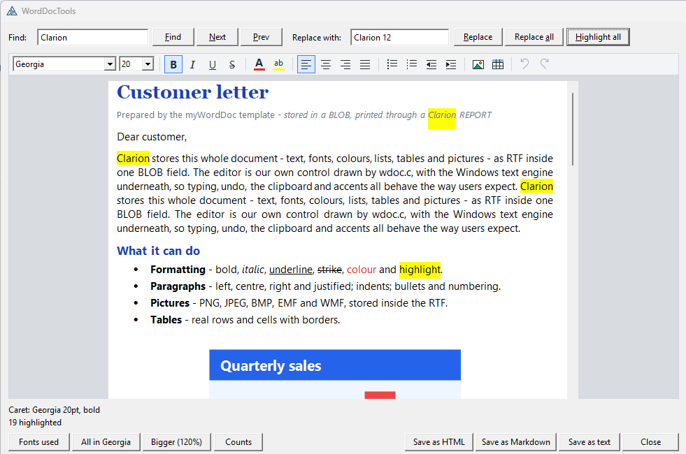
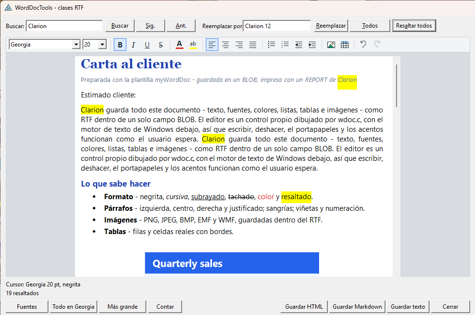
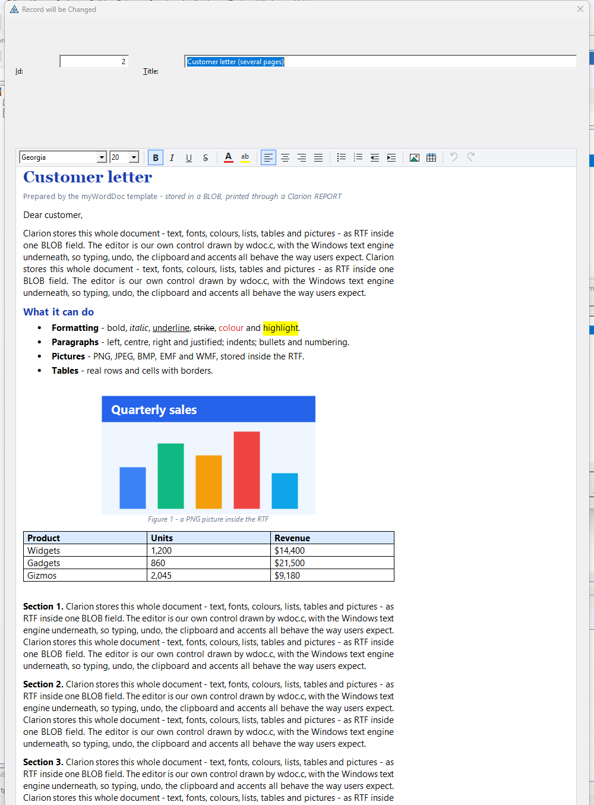
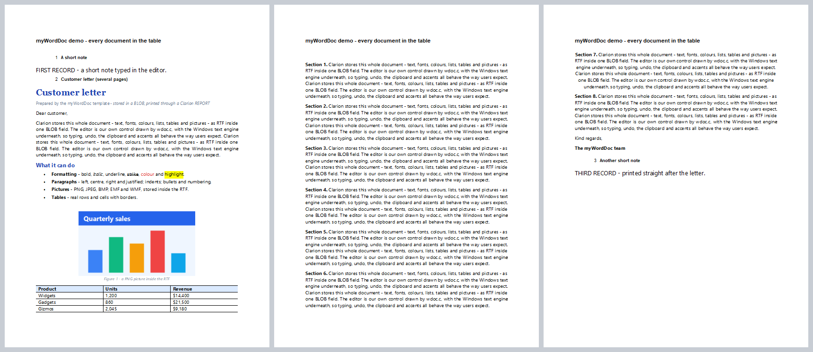
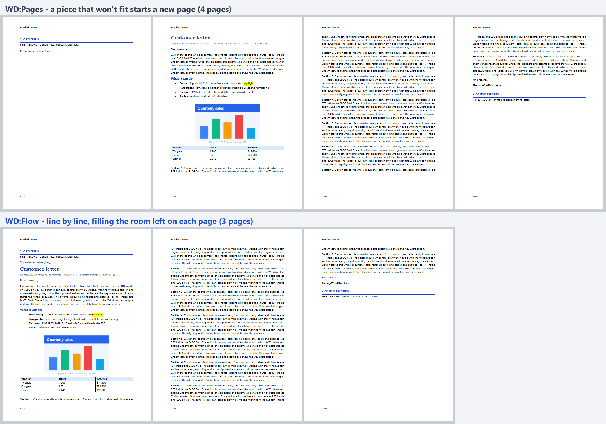
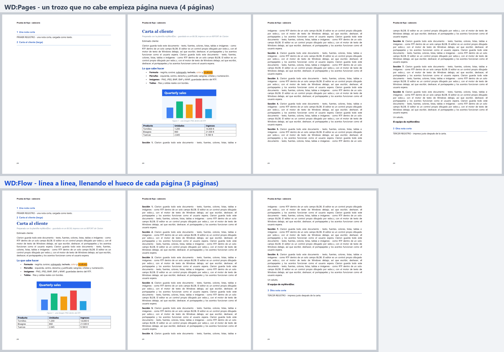
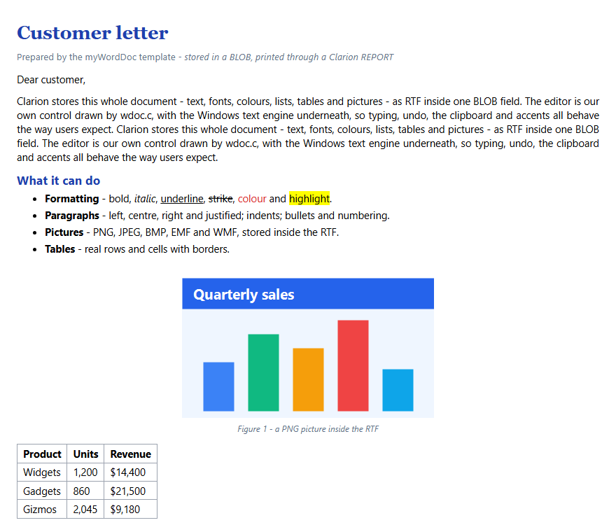
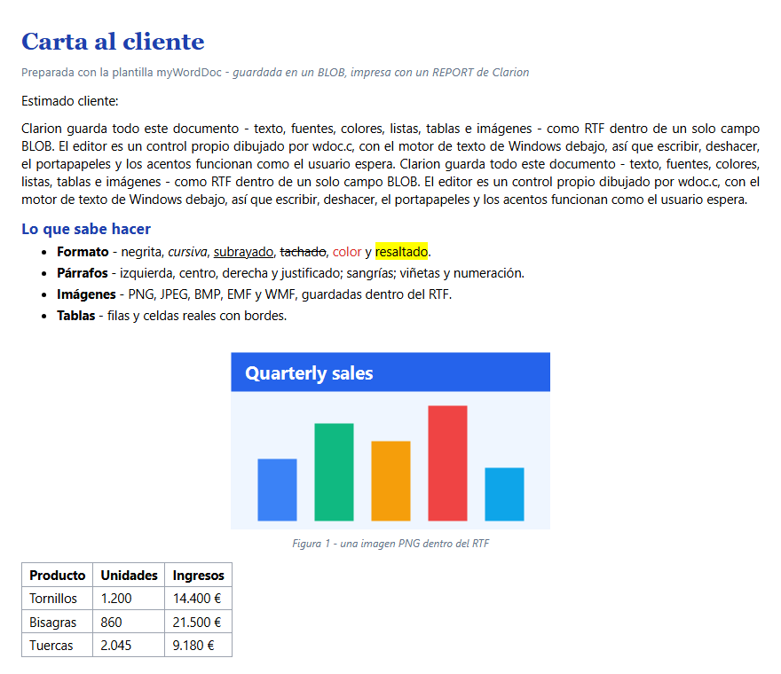

myWordDoc
A word processor for Clarion, stored in a BLOB, that also prints through a Clarion REPORT. Fonts, colours, lists, pictures and tables; search and replace, fonts in use, plain text, HTML, Markdown and mail merge from code. No COM, no OCX, no DLL to ship: the control is C compiled into your exe by Clarion's own compiler.
Un procesador de textos para Clarion, guardado en un BLOB, que además imprime con un REPORT de Clarion. Fuentes, colores, listas, imágenes y tablas; buscar y reemplazar, fuentes usadas, texto plano, HTML, Markdown y combinación de correspondencia desde código. Sin COM, sin OCX, sin DLL que distribuir: el control es C que compila dentro de tu exe el propio compilador de Clarion.
RTF in a BLOB · vector printing · fills the page · 6 tool classes · one-step undo · EN / ES RTF en un BLOB · impresión vectorial · llena la página · 6 clases · deshacer en un paso · EN / ESOverviewResumen #
Drop the editor on a form, point it at a BLOB, and users get a real word processor. Put the report extension on a report and every record's document prints, as vectors, filling each page.
| myWordDoc | |
|---|---|
| Needs a DLL / OCX / COM | No: wdoc.c is compiled into the exe by Clarion |
| Storage | Ordinary RTF in one BLOB: Word and WordPad open it |
| Editing | Fonts, sizes, bold/italic/underline/strike, colour, highlight, alignment, bullets, numbering, indents, pictures, tables |
| Printing | Through a Clarion REPORT, as vector metafiles; starts in the room left on a page |
| From code | Search & replace, fonts, plain text, HTML, Markdown, mail merge |
| Undo | Ctrl+Z / toolbar; a whole tool operation is one step |
| Templates | Editor control, report extension, print code template, global extension (ABC) |
Pon el editor en un formulario, apúntalo a un BLOB, y el usuario tiene un procesador de textos de verdad. Pon la extensión en un informe y se imprime el documento de cada registro, en vectorial, llenando cada página.
| myWordDoc | |
|---|---|
| Necesita DLL / OCX / COM | No: Clarion compila wdoc.c dentro del exe |
| Almacenamiento | RTF normal en un BLOB: lo abren Word y WordPad |
| Edición | Fuentes, tamaños, negrita/cursiva/subrayado/tachado, color, resaltado, alineación, viñetas, numeración, sangrías, imágenes, tablas |
| Impresión | Con un REPORT de Clarion, como metarchivos vectoriales; empieza en el hueco libre de la página |
| Desde código | Buscar y reemplazar, fuentes, texto plano, HTML, Markdown, combinación de correspondencia |
| Deshacer | Ctrl+Z / barra; una operación de herramienta entera es un paso |
| Plantillas | Control de editor, extensión de informe, plantilla de código, extensión global (ABC) |


Install & registerInstalar y registrar #
Five source files and one template:
template/win/
myWordDoc.tpl the AppGen templates
libsrc/win/
wdoc.c the control and the tools engine (C)
WordDocClass.inc / .clw the editor class
WordDocTools.inc / .clw the six RTF tool classes
- Copy the five source files to
accessory\libsrc\win(or any folder on the redirection path), saved as ANSI with CRLF line endings. - Copy
myWordDoc.tpltoaccessory\template\winand register it (Setup → Template Registry → Register). - Restart the IDE so it reads the new template, then regenerate.
There is nothing to add to a project: WordDocClass.clw carries PRAGMA('compile(wdoc.c)'), and each
class has a LINK attribute, so the C and the Clarion modules come in by themselves.
msftedit.dll ships with every Windows since XP SP1.
INCLUDE('WordDocClass.INC'),ONCE and, for the tools,
INCLUDE('WordDocTools.INC'),ONCE.Cinco ficheros fuente y una plantilla:
template/win/
myWordDoc.tpl las plantillas de AppGen
libsrc/win/
wdoc.c el control y el motor de las herramientas (C)
WordDocClass.inc / .clw la clase del editor
WordDocTools.inc / .clw las seis clases RTF
- Copia los cinco ficheros fuente en
accessory\libsrc\win(o cualquier carpeta del redirection), guardados en ANSI con finales CRLF. - Copia
myWordDoc.tplenaccessory\template\winy regístrala (Setup → Template Registry → Register). - Reinicia el IDE para que lea la plantilla nueva y vuelve a generar.
No hay que añadir nada al proyecto: WordDocClass.clw lleva PRAGMA('compile(wdoc.c)') y cada clase tiene
atributo LINK, así que el C y los módulos Clarion entran solos. msftedit.dll viene con todo Windows desde XP SP1.
INCLUDE('WordDocClass.INC'),ONCE y, para las herramientas,
INCLUDE('WordDocTools.INC'),ONCE.The four templatesLas cuatro plantillas #
| Template | Kind | What it does |
|---|---|---|
myWordDocGlobal | application extension (optional) | Includes the editor class and the tool classes in every procedure, for hand code. One switch turns myWordDoc off everywhere. |
myWordDocEditor | control template on a REGION | The editor on a window or form, tied to a BLOB field. MULTI. |
myWordDocReport | report extension | Prints each record's BLOB document through a report IMAGE. |
myWordDocPrintBlob | code template | The same print loop, in any embed you choose. |
| Plantilla | Tipo | Qué hace |
|---|---|---|
myWordDocGlobal | extensión de aplicación (opcional) | Incluye la clase del editor y las clases RTF en todos los procedimientos, para código propio. Un interruptor desactiva myWordDoc en toda la aplicación. |
myWordDocEditor | plantilla de control sobre una REGION | El editor en una ventana o formulario, ligado a un campo BLOB. MULTI. |
myWordDocReport | extensión de informe | Imprime el documento BLOB de cada registro con un IMAGE del informe. |
myWordDocPrintBlob | plantilla de código | El mismo bucle de impresión, en el embed que quieras. |
The editor on a windowEl editor en una ventana #
Populate myWordDocEditor on the form, size the region and pick the BLOB field.
- General: object name; Save it with the record (Insert, or Change when the document was edited).
- Appearance: toolbar, read only, page view, page width (Letter, A4, custom twips or the window), default font and size.
It generates: the load right after the window opens (read only on a View request); TakeEvent so the editor follows the
region as the resizer moves, hides or disables it; SaveBlob in TakeCompleted, just before ABC writes the record; and
Kill. An untouched form closes without an update. The field must be a dictionary BLOB.
The same by hand:
Pon myWordDocEditor en el formulario, dimensiona la región y elige el campo BLOB.
- General: nombre del objeto; Save it with the record (al insertar, o al cambiar si el documento se editó).
- Appearance: barra, solo lectura, vista de página, ancho de página (Letter, A4, twips a medida o la ventana), fuente y tamaño por defecto.
Genera: la carga justo al abrir la ventana (solo lectura si se pide Ver); TakeEvent para que el editor siga a la región
cuando el resizer la mueve, la oculta o la deshabilita; SaveBlob en TakeCompleted, justo antes de que ABC grabe el
registro; y Kill. Un formulario sin tocar se cierra sin actualizar. El campo debe ser un BLOB del diccionario.
Lo mismo a mano:
Doc1 WordDocClass CODE OPEN(Window) Doc1.PageWidth = WD:LetterWidth ! lines break where the printer will break them Doc1.PageView = TRUE Doc1.Init(0{PROP:Handle}, ?DocRegion) Doc1.LoadBlob(DOC:Body) ACCEPT Doc1.TakeEvent() ! every event: follows resizes and TABs END Doc1.SaveBlob(DOC:Body) ! then write the record Doc1.Kill() CLOSE(Window)
Doc1 WordDocClass CODE OPEN(Window) Doc1.PageWidth = WD:LetterWidth ! las líneas parten donde partirá la impresora Doc1.PageView = TRUE Doc1.Init(0{PROP:Handle}, ?DocRegion) Doc1.LoadBlob(DOC:Body) ACCEPT Doc1.TakeEvent() ! en cada evento: sigue al redimensionado y a los TAB END Doc1.SaveBlob(DOC:Body) ! y después graba el registro Doc1.Kill() CLOSE(Window)

UpdateDoc form of the AppGen demo
(examples/myWordDoc/WordDemo), editing the letter stored in the record's BLOB.El
formulario UpdateDoc generado de la demo de AppGen (examples/myWordDoc/WordDemo), editando la
carta guardada en el BLOB del registro. La demo generada está en inglés.Toolbar, keys and page viewBarra, teclas y vista de página #
Font and size boxes, B I U S, text colour and highlight (the Windows colour dialog),
left/centre/right/justify, bullets, numbering, outdent/indent, insert picture (PNG, JPEG, BMP, EMF, WMF), insert table
(a menu of sizes), undo and redo. The buttons light up for the formatting under the caret, and the font and size boxes go
blank when the selection mixes several. It wraps onto a second row when the control is narrow.
Everything RichEdit knows works too: Ctrl+B/I/U, Ctrl+L/E/R/J, Ctrl+Z/Y, the clipboard (including pasting a picture), Tab and Enter.
Set PageWidth (WD:LetterWidth, WD:A4Width or twips) and lines wrap exactly where the
printer will: text is measured on the default printer, as WordPad does. PageView = TRUE shows the document as a
sheet of that width on a grey desk. Every toolbar operation is also a method, so you can hide the toolbar
(ShowToolbar = FALSE) and drive it from your own buttons.
Cajas de fuente y tamaño, N K S T, color de texto y resaltado (el diálogo de color de Windows),
izquierda/centro/derecha/justificado, viñetas, numeración, quitar/añadir sangría, insertar imagen (PNG, JPEG, BMP, EMF, WMF),
insertar tabla (un menú de tamaños), deshacer y rehacer. Los botones se iluminan según el formato bajo el cursor, y las
cajas de fuente y tamaño quedan en blanco si la selección mezcla varios. Pasa a una segunda fila si el control es estrecho.
Funciona todo lo que sabe RichEdit: Ctrl+B/I/U, Ctrl+L/E/R/J, Ctrl+Z/Y, el portapapeles (incluido pegar una imagen), Tab y Enter.
Pon PageWidth (WD:LetterWidth, WD:A4Width o twips) y las líneas parten exactamente donde
partirá la impresora: el texto se mide en la impresora predeterminada, como hace WordPad. PageView = TRUE muestra
el documento como una hoja de ese ancho sobre un fondo gris. Cada operación de la barra es también un método, así que puedes
ocultar la barra (ShowToolbar = FALSE) y manejarlo con tus botones.
One BLOB, plain RTFUn BLOB, RTF normal #
The BLOB holds ordinary RTF, so Word and WordPad open it, and pictures travel inside it ({\pict\pngblip ...}).
A BLOB holding plain text (not starting with {\rtf) loads as plain text, so an existing MEMO-style column can be
switched over without a conversion.
Doc1.LoadBlob(DOC:Body) ! after the window opens Doc1.SaveBlob(DOC:Body) ! before the record is written
El BLOB guarda RTF normal, así que lo abren Word y WordPad, y las imágenes viajan dentro ({\pict\pngblip ...}).
Un BLOB con texto plano (que no empieza por {\rtf) se carga como texto, así que una columna tipo MEMO se puede pasar
sin conversión.
Doc1.LoadBlob(DOC:Body) ! al abrir la ventana Doc1.SaveBlob(DOC:Body) ! antes de grabar el registro
UndoDeshacer #
Ctrl+Z / Ctrl+Y, the toolbar arrows and Undo() / Redo(). Each tool operation is one step: a
ReplaceAll of 19 words, SetFontAll, ScaleSizes, ReplaceFont,
HighlightAll or a whole Merge comes back with one Ctrl+Z. Loading a document clears the history, so
Undo never reaches back into the previous record.
Ctrl+Z / Ctrl+Y, las flechas de la barra y Undo() / Redo(). Cada operación de herramienta es un
paso: un ReplaceAll de 19 palabras, SetFontAll, ScaleSizes, ReplaceFont,
HighlightAll o un Merge entero se deshace con un Ctrl+Z. Cargar un documento vacía el historial, así
que Deshacer nunca vuelve al registro anterior.
Search.ReplaceAll('Acme Ltd', 'Acme Limited') Search.Undo() ! all of them back: the same as Ctrl+Z or Doc1.Undo() IF Doc1.CanUndo() THEN ENABLE(?UndoBtn) ELSE DISABLE(?UndoBtn). Doc1.BeginUndoGroup() ! your own edits as one step Doc1.InsertText('Dear ' & CLIP(CUS:Name) & ',') Doc1.SelectText(0, 4) Doc1.Bold(WD:On) Doc1.EndUndoGroup() ! pairs nest Doc1.ClearUndo() ! forget the history Doc1.SetUndoLimit(500) ! keep more than the default 100 steps
Search.ReplaceAll('Acme SL', 'Acme S.L.') Search.Undo() ! vuelven todos: igual que Ctrl+Z o Doc1.Undo() IF Doc1.CanUndo() THEN ENABLE(?UndoBtn) ELSE DISABLE(?UndoBtn). Doc1.BeginUndoGroup() ! tus propias ediciones como un paso Doc1.InsertText('Estimado ' & CLIP(CLI:Nombre) & ':') Doc1.SelectText(0, 8) Doc1.Bold(WD:On) Doc1.EndUndoGroup() ! los pares se anidan Doc1.ClearUndo() ! olvidar el historial Doc1.SetUndoLimit(500) ! más pasos que los 100 de serie
BeginEditCollection, Windows 8 and later). On older Windows undo still works, one change at a time.La
agrupación es el propio deshacer del motor de texto (TOM BeginEditCollection, Windows 8 o posterior). En Windows anteriores
el deshacer sigue funcionando, cambio a cambio.Printing in a REPORTImprimir en un REPORT #
Put an empty IMAGE in a DETAIL band, as wide as the document and as tall as the most one page can hold. Add
myWordDocReport and pick the BLOB and the IMAGE (the band is found from it). Choose whether the document prints before or
after the record's other detail bands. The extension takes the band out of ABC's own print loop, so it never prints twice, and
for each record it re-reads the record, loads the document and prints it. myWordDocPrintBlob does the same in any embed:
name the report, the IMAGE and the band, and set the band's Detail Filter to False.
By hand:
Pon un IMAGE vacío en una banda DETAIL, tan ancho como el documento y tan alto como quepa en una página. Añade
myWordDocReport y elige el BLOB y el IMAGE (la banda se deduce de él). Elige si el documento se imprime antes o después
de las otras bandas del registro. La extensión saca la banda del bucle de impresión de ABC, así que nunca sale dos veces, y
para cada registro lo vuelve a leer, carga el documento y lo imprime. myWordDocPrintBlob hace lo mismo en cualquier embed:
indica el informe, el IMAGE y la banda, y pon el Detail Filter de la banda a False.
A mano:
Doc1.InitHidden() ! once, after OPEN(Report) ... GET(Docs, DOC:PKey) ! a VIEW read does not fill a BLOB Doc1.LoadBlob(DOC:Body) LOOP Page# = 1 TO Doc1.PaginateForReport(Report, ?DocImage, WD:Flow) Doc1.PreparePage(Report, ?DocImage, Page#) ! piece N into the IMAGE PRINT(RPT:DocBand) END ... Doc1.Kill() ! deletes the temporary files
Doc1.InitHidden() ! una vez, tras OPEN(Report) ... GET(Docs, DOC:PKey) ! una lectura de VIEW no rellena el BLOB Doc1.LoadBlob(DOC:Body) LOOP Page# = 1 TO Doc1.PaginateForReport(Report, ?DocImage, WD:Flow) Doc1.PreparePage(Report, ?DocImage, Page#) ! el trozo N en el IMAGE PRINT(RPT:DocBand) END ... Doc1.Kill() ! borra los ficheros temporales

PrintDocs report over three records: the letter
starts right under its title on page 1, fills every page, and the third note follows straight after it.El
informe PrintDocs generado con tres registros: la carta empieza justo bajo su título en la página 1, llena cada
página y la tercera nota sale justo detrás (demo en inglés).WD:Flow and WD:PagesWD:Flow y WD:Pages #
WD:Flow (the templates' default, Fill the room left on each page, line by line) cuts the document
one line per piece. Each line prints as its own band, the height of that line, and the report engine places every band
itself: on this page if it fits, on the next if not. So a long document starts in whatever room the previous record left, fills
that page, carries on over as many pages as it needs, and whatever prints next follows straight on.
WD:Pages (the class default) cuts pieces the size of the IMAGE. A piece that won't fit in the room left
starts a new page, which can leave most of a page empty; Shrink the last piece trims the final piece to its text.
WD:Flow (lo que usan las plantillas por defecto, Fill the room left on each page, line by line) corta
el documento en un trozo por línea. Cada línea se imprime como su propia banda, de la altura de esa línea, y el motor de
informes coloca cada banda: en esta página si cabe, en la siguiente si no. Así un documento largo empieza en el hueco que dejó
el registro anterior, llena esa página, sigue en las que haga falta, y lo siguiente sale justo detrás.
WD:Pages (el valor por defecto de la clase) corta trozos del tamaño del IMAGE. Un trozo que no cabe en el
hueco empieza página nueva, lo que puede dejar casi una página vacía; Shrink the last piece recorta el último trozo a su texto.


Why line by line: a Clarion REPORT cannot tell a program how much room is left on a page, and it moves a band that doesn't fit whole to the next page. Letting the engine place one line at a time avoids both, and nothing has to be measured.
Por qué línea a línea: un REPORT de Clarion no puede decirle a un programa cuánto sitio queda en la página, y mueve entera a la página siguiente una banda que no cabe. Dejar que el motor coloque una línea cada vez evita las dos cosas y no hay que medir nada.
Why WMF, and what the conversion neededPor qué WMF y qué necesitó la conversión #
Each piece is drawn by RichEdit (EM_FORMATRANGE) into an enhanced metafile and written as a placeable WMF:
an .emf on a report IMAGE prints nothing, while the report engine plays a WMF's records straight into the page, so
text stays vector and PDFs stay small. wdoc.c fixes three things the conversion gets wrong:
- Pictures disappear: RichEdit draws them with AlphaBlend, which WMF cannot express. They are composited onto white at 200 dpi and written as STRETCHDIB records.
- The WMF is huge: the converter hides a full copy of the EMF in comment records (11 MB for one page with a picture). They are dropped.
- Bullets print as "?": RichEdit draws them as U+2981 and symbol-font characters as U+F0xx. They are mapped into the ANSI range.
Text is measured on the default printer, not the 96-dpi screen, so lines break in the editor exactly where they print.
RichEdit dibuja cada trozo (EM_FORMATRANGE) en un metarchivo mejorado que se escribe como WMF placeable:
un .emf en un IMAGE de informe no imprime nada, mientras que el motor de informes reproduce los registros de un WMF
directamente en la página, así el texto sigue siendo vectorial y los PDF son pequeños. wdoc.c arregla tres cosas
que la conversión hace mal:
- Desaparecen las imágenes: RichEdit las dibuja con AlphaBlend, que WMF no puede expresar. Se componen sobre blanco a 200 ppp y se escriben como registros STRETCHDIB.
- El WMF es enorme: el conversor esconde una copia entera del EMF en registros de comentario (11 MB para una página con una imagen). Se eliminan.
- Las viñetas salen como "?": RichEdit las dibuja como U+2981 y los caracteres de fuentes de símbolos como U+F0xx. Se traducen al rango ANSI.
El texto se mide en la impresora predeterminada, no en la pantalla de 96 ppp, así que las líneas parten en el editor exactamente donde se imprimen.
RTF tool classesClases RTF #
| Class | What it does |
|---|---|
RtfSearchClass | find, next/previous, count, replace, replace all, highlight every hit, the text around a hit |
RtfFontClass | the font, size, style and colour at a position or in the selection; fonts in use; replace a font; set or scale every size |
RtfTextClass | readable plain text (lists, table cells); word/character/paragraph/picture/table counts; excerpts; text to RTF |
RtfHtmlClass | an HTML page or an e-mail fragment, pictures embedded or written as files |
RtfMarkdownClass | headings, emphasis, lists, tables, pictures |
RtfMergeClass | fills [[Name]] placeholders from your values or from BIND()ed fields |
Every class works on a document one of two ways. On a live editor the tools put the user's selection and scroll position back
when they finish; Find, FindNext and FindPrevious move to the hit on purpose. Positions are 0-based character positions, the
same ones SelectText takes.
| Clase | Qué hace |
|---|---|
RtfSearchClass | buscar, siguiente/anterior, contar, reemplazar, reemplazar todo, resaltar cada coincidencia, el texto alrededor |
RtfFontClass | la fuente, tamaño, estilo y color en una posición o en la selección; fuentes usadas; cambiar una fuente; fijar o escalar los tamaños |
RtfTextClass | texto plano legible (listas, celdas); recuentos de palabras, caracteres, párrafos, imágenes y tablas; extractos; texto a RTF |
RtfHtmlClass | una página HTML o un fragmento para un correo, con las imágenes incrustadas o en ficheros |
RtfMarkdownClass | títulos, énfasis, listas, tablas, imágenes |
RtfMergeClass | rellena marcadores [[Nombre]] con tus valores o con campos ligados con BIND() |
Todas trabajan sobre un documento de una de dos formas. En un editor vivo, al terminar devuelven la selección y el
desplazamiento del usuario; Find, FindNext y FindPrevious se mueven a la coincidencia a propósito. Las posiciones son posiciones
de carácter desde 0, las mismas que usa SelectText.
Search.Attach(Doc1) ! the editor on the window: the user sees every change ! - or - Text.LoadBlob(DOC:Body) ! its own hidden document (also LoadString, LoadFile) ... Search.SaveBlob(DOC:Body) ! keep the changes (also SaveFile, GetRtf)
Search.Attach(Doc1) ! el editor de la ventana: el usuario ve cada cambio ! - o bien - Text.LoadBlob(DOC:Body) ! su propio documento oculto (también LoadString, LoadFile) ... Search.SaveBlob(DOC:Body) ! guardar los cambios (también SaveFile, GetRtf)
RtfSearchClass: find and replaceRtfSearchClass: buscar y reemplazar #
Search.Attach(Doc1) Search.WholeWord = TRUE IF Search.Find('invoice') >= 0 ! first hit, selected and scrolled into view MESSAGE(Search.Count('invoice') & ' found. The first: ' & Search.Context(30)) END Search.FindNext() ! goes round to the top while Wrap is on Search.ReplaceAll('Acme Ltd', 'Acme Limited') ! each keeps its formatting; one Undo Search.Replace('colour', 'color') ! Word's Replace button: find, then replace + next Search.HighlightAll('urgent', COLOR:Yellow) ! COLOR:None takes it off
Search.Attach(Doc1) Search.WholeWord = TRUE IF Search.Find('factura') >= 0 ! primera coincidencia, seleccionada y visible MESSAGE(Search.Count('factura') & ' encontradas. La primera: ' & Search.Context(30)) END Search.FindNext() ! vuelve al principio mientras Wrap esté activo Search.ReplaceAll('Acme SL', 'Acme S.L.') ! cada una conserva su formato; un Deshacer Search.Replace('color', 'colour') ! el botón Reemplazar de Word: busca, luego reemplaza y sigue Search.HighlightAll('urgente', COLOR:Yellow) ! COLOR:None lo quita
FoundAt / FoundEnd give the last hit and TextAt(From, To) any range.
SelectHits = FALSE searches without moving the user's selection. A replacement takes the formatting of the text it
replaces, so a bold name stays bold.
FoundAt / FoundEnd dan la última coincidencia y TextAt(Desde, Hasta)
cualquier rango. SelectHits = FALSE busca sin mover la selección del usuario. Lo reemplazado toma el formato del texto
al que sustituye, así que un nombre en negrita sigue en negrita.
RtfFontClass: which font am I on?RtfFontClass: ¿en qué fuente estoy? #
Font.Attach(Doc1) Font.Read() ! the selection; Font.Read(Pos) reads one character ?Status{PROP:Text} = Font.Describe() ! 'Georgia 12pt, bold, italic' Font.FontList() ! 'Georgia, Segoe UI' - only characters you can see count Font.MainFont() ! the font most of the text is in Font.ReplaceFont('Comic Sans MS', 'Segoe UI') Font.SetFontAll('Calibri', 11) ! '' or 0 leaves that part as it is Font.ScaleSizes(120) ! every size 20% bigger, headings with it
Font.Attach(Doc1) Font.Read() ! la selección; Font.Read(Pos) lee un carácter ?Status{PROP:Text} = Font.Describe() ! 'Georgia 12pt, bold, italic' (en inglés) Font.FontList() ! 'Georgia, Segoe UI' - solo cuentan los caracteres visibles Font.MainFont() ! la fuente de la mayor parte del texto Font.ReplaceFont('Comic Sans MS', 'Segoe UI') Font.SetFontAll('Calibri', 11) ! '' o 0 deja esa parte como está Font.ScaleSizes(120) ! todos los tamaños un 20% mayores, títulos incluidos
Over a selection that mixes styles a property says so: Face is blank, Size 0,
Bold and the other on/off values -1, Color or Highlight -2.
Color = COLOR:None means automatic.
Si la selección mezcla estilos, la propiedad lo indica: Face vacío, Size 0,
Bold y los demás sí/no a -1, Color o Highlight a -2. Color = COLOR:None
significa automático.
RtfTextClass: plain textRtfTextClass: texto plano #
Text.LoadBlob(DOC:Body) DOC:PlainText = Text.ToText() ! a search index, a LIST column, an SMS DOC:Summary = Text.Excerpt(120) ! one line, cut at a word, with '...' L:Info = Text.WordCount() & ' words, ' & Text.CharCount() & ' characters' Doc1.LoadString(Text.TextToRtf(NOTE:Memo, 'Georgia', 12)) ! a MEMO into the editor
Text.LoadBlob(DOC:Body) DOC:TextoPlano = Text.ToText() ! un índice de búsqueda, una columna, un SMS DOC:Resumen = Text.Excerpt(120) ! una línea, cortada en una palabra, con '...' L:Info = Text.WordCount() & ' palabras, ' & Text.CharCount() & ' caracteres' Doc1.LoadString(Text.TextToRtf(NOTA:Memo, 'Georgia', 12)) ! un MEMO en el editor
Bullets become - , numbered items 1. b. iv., table cells are
separated by TAB. ListPrefixes, Bullet, TabCells, PictureMarks and
Utf8 change that.
What it can do - Formatting - bold, italic, underline, strike, colour and highlight. Product Units Revenue Widgets 1,200 $14,400
Las viñetas pasan a - , los elementos numerados a 1. b. iv., y
las celdas se separan con TAB. ListPrefixes, Bullet, TabCells, PictureMarks y
Utf8 lo cambian.
Lo que sabe hacer - Formato - negrita, cursiva, subrayado, tachado, color y resaltado. Producto Unidades Ingresos Tornillos 1.200 14.400 €
RtfHtmlClass and RtfMarkdownClassRtfHtmlClass y RtfMarkdownClass #
Html.LoadBlob(DOC:Body) Html.Title = DOC:Title Html.SaveHtml('letter.html') ! a complete UTF-8 page Html.FullPage = FALSE ! only a <div>, for the body of an e-mail Html.ImageFolder = 'C:\Site\img' ! pictures as files instead of data: URIs ... Html.ImageUrl = 'img/' ! ... linked as img/image1.png Md.LoadBlob(DOC:Body) Md.SaveMarkdown('letter.md') ! headings, lists, tables, pictures
Html.LoadBlob(DOC:Body) Html.Title = DOC:Titulo Html.SaveHtml('carta.html') ! una página UTF-8 completa Html.FullPage = FALSE ! solo un <div>, para el cuerpo de un correo Html.ImageFolder = 'C:\Web\img' ! imágenes como ficheros en vez de data: URI ... Html.ImageUrl = 'img/' ! ... enlazadas como img/image1.png Md.LoadBlob(DOC:Body) Md.SaveMarkdown('carta.md') ! títulos, listas, tablas, imágenes


Styles are inline, so the HTML survives mail clients that drop <style> blocks. PNG and JPEG
pictures are copied byte for byte; EMF, WMF and BMP are drawn at twice their size and saved as PNG through GDI+. In Markdown a
short paragraph in large type becomes a heading (# at 1.6 times the body size, ## at 1.3, ###
at 1.12 when all bold), and emphasis markers stay next to the words.
Los estilos van en línea, así que el HTML sobrevive a los clientes de correo que quitan los bloques
<style>. Las imágenes PNG y JPEG se copian byte a byte; EMF, WMF y BMP se dibujan al doble de tamaño y se guardan
como PNG con GDI+. En Markdown, un párrafo corto en letra grande pasa a título (# a 1,6 veces el cuerpo,
## a 1,3, ### a 1,12 si es todo negrita), y las marcas de énfasis quedan pegadas a las palabras.
RtfMergeClass: mail mergeRtfMergeClass: combinar correspondencia #
Merge.LoadBlob(TPL:Body) ! the template letter: "Dear [[CUS:Name]], ... [[When]]" BIND(CUS:Record) ! BIND()ed fields fill their placeholders by themselves Merge.SetField('When', 'on ' & FORMAT(ORD:ShipDate, @D17)) IF Merge.Missing() <> '' ! placeholders nothing will fill MESSAGE('No value for: ' & Merge.Missing()) END Merge.Merge() ! each value takes its placeholder's formatting Merge.SaveBlob(LET:Body) ! the finished letter
Merge.LoadBlob(PLA:Body) ! la carta modelo: "Estimado [[CLI:Nombre]], ... [[Fecha]]" BIND(CLI:Record) ! los campos con BIND() rellenan solos sus marcadores Merge.SetField('Fecha', FORMAT(PED:FechaEnvio, @D17)) IF Merge.Missing() <> '' ! marcadores que nada rellenará MESSAGE('Sin valor para: ' & Merge.Missing()) END Merge.Merge() ! cada valor toma el formato de su marcador Merge.SaveBlob(CAR:Body) ! la carta terminada
How it is builtCómo está hecho #
wdoc.c registers its own window class (myWordDocHost) whose window procedure paints the toolbar and
holds the editing surface: RICHEDIT50W in msftedit.dll, the engine behind WordPad, used as a component for
typing, line breaking, selection, undo, the clipboard and RTF. The host is its parent, so RichEdit's notifications come to our
window procedure and the Clarion window is never subclassed. Every Win32 call is bound with LoadLibrary/GetProcAddress, so there
is no import library. A document created with no parent window is invisible: that is what reports and the tool classes use.
| Detail | Why it matters |
|---|---|
| Structures packed on 2 bytes | Clarion's C compiler packs structs on 2-byte boundaries, so the hole Win32 leaves in CHARFORMAT2 is spelled out. StructSizes() checks it: 84188. |
| IRichEditOleCallback | RichEdit keeps BMP, EMF and WMF pictures as OLE objects and drops them silently unless its owner hands it storage. wdoc.c registers the callback, as WordPad does. |
GT_RAWTEXT | The tools read the raw text, where table rows are U+FFF9 … U+FFFB, cells end in U+0007 and a picture is U+FFFC, so every index is a real character position. |
| Run walking | A stretch with one look is found by doubling the selection while RichEdit reports one format, then halving back to the edge: a few messages per run, not one per character. |
| TOM edit collections | Each tool operation runs between BeginEditCollection and EndEditCollection, so it is one undo step. |
wdoc.c registra su propia clase de ventana (myWordDocHost), cuyo procedimiento pinta la barra y
contiene la superficie de edición: RICHEDIT50W de msftedit.dll, el motor de WordPad, usado como componente para
escribir, partir líneas, seleccionar, deshacer, el portapapeles y el RTF. El anfitrión es su padre, así que las notificaciones de
RichEdit llegan a nuestro procedimiento y la ventana Clarion nunca se subclasifica. Cada llamada Win32 se enlaza con
LoadLibrary/GetProcAddress, sin biblioteca de importación. Un documento creado sin ventana padre es invisible: eso es lo que usan
los informes y las clases de herramientas.
| Detalle | Por qué importa |
|---|---|
| Estructuras empaquetadas a 2 bytes | El compilador C de Clarion empaqueta a 2 bytes, así que el hueco que deja Win32 en CHARFORMAT2 está escrito a mano. StructSizes() lo comprueba: 84188. |
| IRichEditOleCallback | RichEdit guarda las imágenes BMP, EMF y WMF como objetos OLE y las descarta en silencio si su dueño no le da almacenamiento. wdoc.c registra el callback, como WordPad. |
GT_RAWTEXT | Las herramientas leen el texto en bruto, donde las filas son U+FFF9 … U+FFFB, las celdas acaban en U+0007 y una imagen es U+FFFC, así cada índice es una posición real. |
| Recorrido de tramos | Un tramo con un mismo aspecto se encuentra doblando la selección mientras RichEdit informa un solo formato y luego partiendo a la mitad hasta el borde: pocos mensajes por tramo, no uno por carácter. |
| Colecciones de edición TOM | Cada operación de herramienta va entre BeginEditCollection y EndEditCollection, así que es un solo paso de deshacer. |
Demos and testsDemos y pruebas #
| Program | What it proves |
|---|---|
examples/myWordDoc/Spike.exe AUTO | 30 headless checks of the class: struct layout, every format getter after its setter, tables, pictures, Find, a BLOB round trip through a TopSpeed record, pagination, metafiles. |
Spike.exe REPORT | Prints sample.rtf through a REPORT into PROP:Preview and copies the pages out. |
Flow.exe [PAGES] [ES] | A note, the long letter and another note in one report, as WD:Flow or WD:Pages: the comparison image above. |
Tools.exe AUTO | 60 checks of the tool classes and undo, with every export written to tools_out\. |
Tools.exe [ES] | The window in the screenshots: find, replace, highlight, the font under the caret, the exports. |
WordDemo/build_demo.sh | The templates through AppGen: dictionary, TXA import, generate, compile; browse, form and two reports. |
Build them with examples/myWordDoc/build.sh (32-bit MSBuild, Clarion 12).
| Programa | Qué demuestra |
|---|---|
examples/myWordDoc/Spike.exe AUTO | 30 comprobaciones sin ventana de la clase: estructuras, cada lectura de formato tras su escritura, tablas, imágenes, Find, un BLOB de ida y vuelta por un registro TopSpeed, paginación, metarchivos. |
Spike.exe REPORT | Imprime sample.rtf con un REPORT en PROP:Preview y copia las páginas. |
Flow.exe [PAGES] [ES] | Una nota, la carta larga y otra nota en un informe, con WD:Flow o WD:Pages: la imagen comparativa de arriba. |
Tools.exe AUTO | 60 comprobaciones de las clases RTF y del deshacer, con cada exportación escrita en tools_out\. |
Tools.exe [ES] | La ventana de las capturas: buscar, reemplazar, resaltar, la fuente bajo el cursor, las exportaciones. |
WordDemo/build_demo.sh | Las plantillas pasando por AppGen: diccionario, importación TXA, generación y compilación; browse, formulario y dos informes. |
Se compilan con examples/myWordDoc/build.sh (MSBuild de 32 bits, Clarion 12).
Class referenceReferencia de clases #
Every public property, method and equate of WordDocClass and the six tool classes, each with its signature, what it does and a line of Clarion: myWordDoc-reference.html.
Todas las propiedades, métodos y equates públicos de WordDocClass y de las seis clases RTF, cada uno con su firma, lo que hace y una línea de Clarion: myWordDoc-reference.html.
Known limitsLímites conocidos #
| Limit | Why | Workaround |
|---|---|---|
| GIF, TIFF and ICO cannot be inserted from the toolbar | RTF has no blip type for them | Convert to PNG, or paste them (the clipboard gives RichEdit a bitmap) |
| Printed text is limited to the ANSI code page | WMF text records are 8-bit | Fine for Western languages; Greek/Cyrillic/CJK show on screen and in the BLOB, not in print |
| Printed pictures are 200 dpi | keeps pages and PDFs small | PIC_DPI in wdoc.c |
| No headers, footers or page numbers inside the document | the document is a band, not a page | use the REPORT's own header and footer |
| WD:Flow keeps a paragraph's space-before at the top of a page | each line prints exactly as laid out | barely visible; use WD:Pages if it matters |
| Undo comes back one change at a time on Windows 7 | TOM edit collections need RichEdit 8 (Windows 8+) | none needed; it still works |
RtfFontClass.Describe is English | it is a convenience string | build your own text from the properties |
| Límite | Por qué | Solución |
|---|---|---|
| GIF, TIFF e ICO no se pueden insertar desde la barra | RTF no tiene tipo de imagen para ellos | Conviértelos a PNG, o pégalos (el portapapeles le da a RichEdit un mapa de bits) |
| El texto impreso se limita a la página de códigos ANSI | los registros de texto WMF son de 8 bits | Bien para idiomas occidentales; griego/cirílico/CJK se ven en pantalla y en el BLOB, no al imprimir |
| Las imágenes se imprimen a 200 ppp | mantiene pequeños páginas y PDF | PIC_DPI en wdoc.c |
| Sin cabeceras, pies ni números de página dentro del documento | el documento es una banda, no una página | usa la cabecera y el pie del REPORT |
| WD:Flow conserva el espacio anterior de un párrafo al principio de página | cada línea se imprime tal cual se maquetó | apenas se nota; usa WD:Pages si importa |
| En Windows 7 el deshacer va cambio a cambio | las colecciones de TOM necesitan RichEdit 8 (Windows 8+) | no hace falta; sigue funcionando |
RtfFontClass.Describe está en inglés | es una cadena de conveniencia | compone tu propio texto con las propiedades |
TroubleshootingProblemas #
| Symptom | Cause and cure |
|---|---|
Illegal data type on the class declaration | A source file saved with Unix line endings. Clarion source must be CRLF. |
| The template does not appear after copying it | Register it, then restart the IDE: it reads the registry at start-up. |
| Every record prints the same document | A VIEW read does not fill BLOBs. Tick Re-read the record by its primary key (code template) or GET the record yourself. |
| The report prints the band twice | The band is also printed by ABC. The extension handles it; with the code template set the band's Detail Filter to False. |
| Other controls in the document band vanish or move | In WD:Flow the band is cut to each line. Keep the IMAGE alone in its band. |
Doc1.Err is not 0 after Init | The step that failed: -4 msftedit.dll missing, -6 no display device, -10/-11/-12 a window could not be created. |
| Síntoma | Causa y solución |
|---|---|
Illegal data type en la declaración de la clase | Un fichero fuente guardado con finales de línea Unix. El código Clarion debe ser CRLF. |
| La plantilla no aparece tras copiarla | Regístrala y reinicia el IDE: lee el registro al arrancar. |
| Todos los registros imprimen el mismo documento | Una lectura de VIEW no rellena los BLOB. Marca Re-read the record by its primary key (plantilla de código) o haz tú el GET. |
| El informe imprime la banda dos veces | ABC también imprime la banda. La extensión lo resuelve; con la plantilla de código pon el Detail Filter de la banda a False. |
| Otros controles de la banda del documento desaparecen o se mueven | En WD:Flow la banda se recorta a cada línea. Deja el IMAGE solo en su banda. |
Doc1.Err distinto de 0 tras Init | El paso que falló: -4 falta msftedit.dll, -6 sin dispositivo de pantalla, -10/-11/-12 no se pudo crear una ventana. |